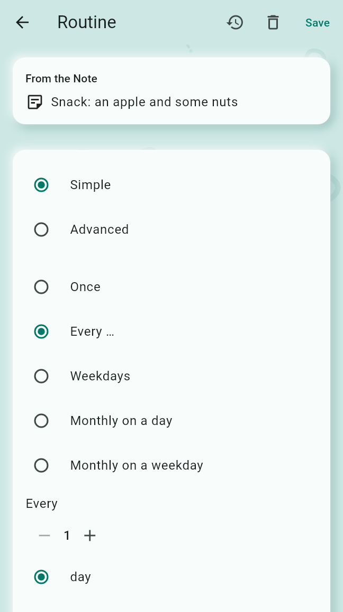
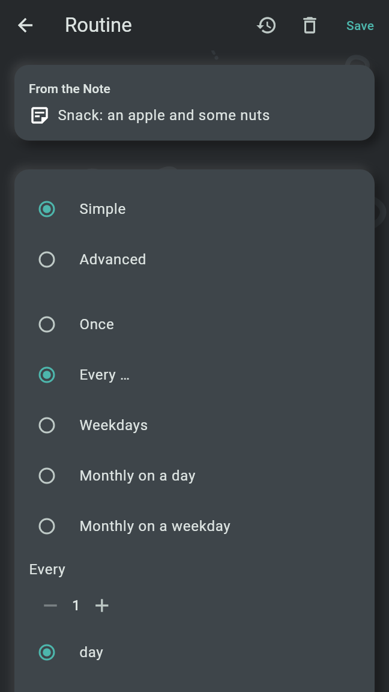
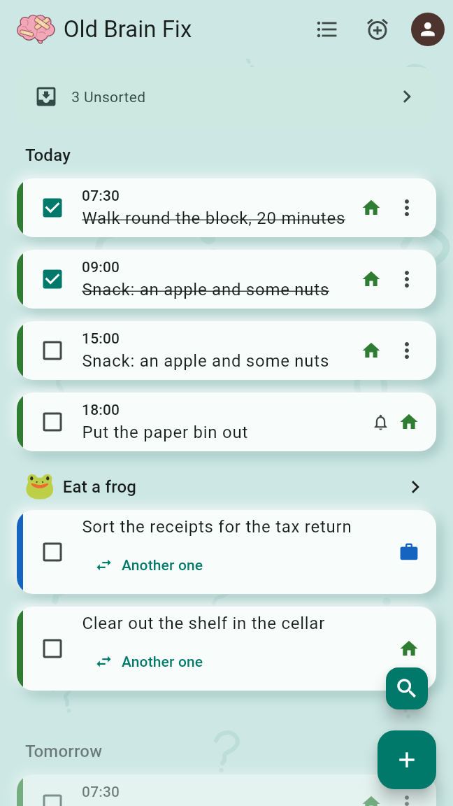
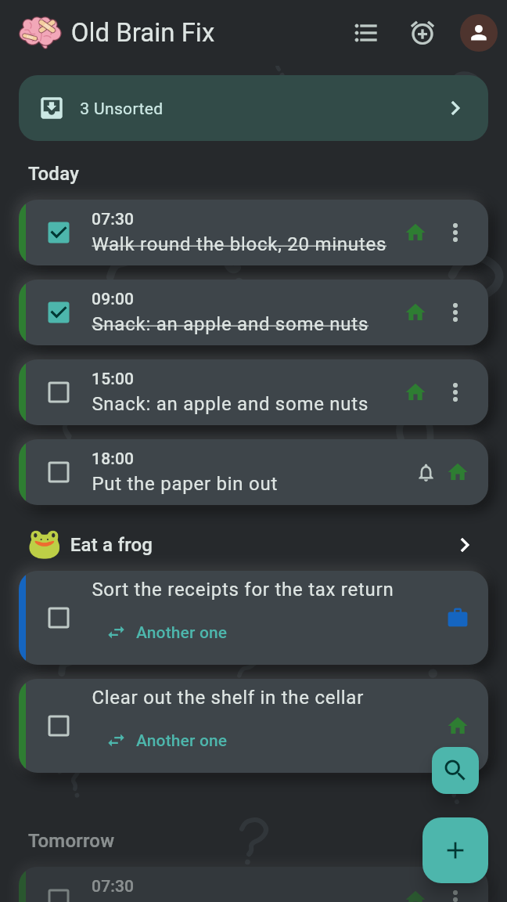
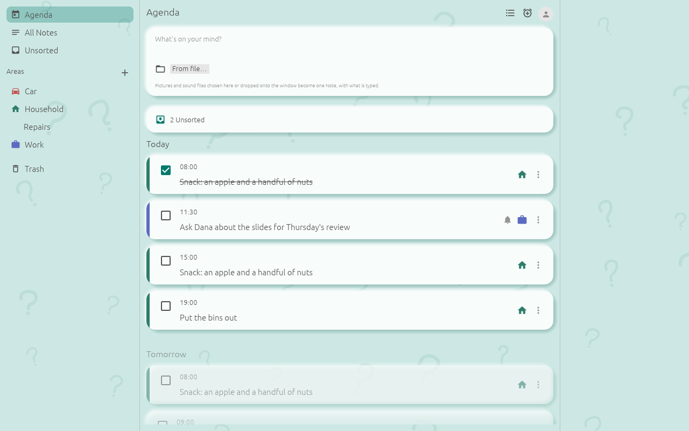
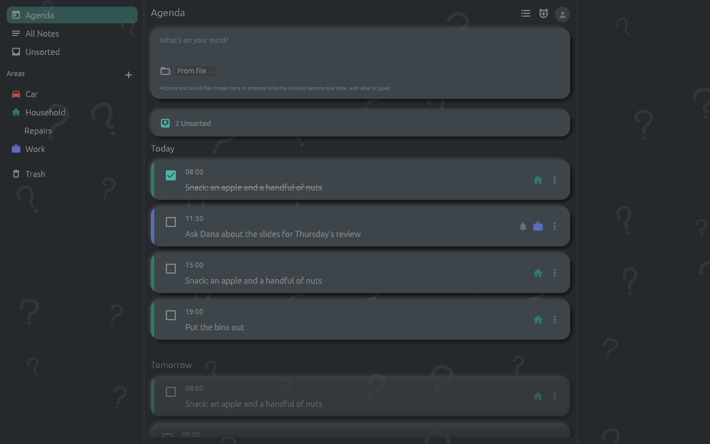

A Routine is something to be done on a repeating schedule; a Reminder is a Routine that happens only once. Both come from a Note, ring at their time and ring again until they are Done. The Agenda shows what is due today and on the six days after it.
A new Routine starts every day at 08:00, a new Reminder once at the next full hour. Save in the top bar writes it; leaving the editor without Save drops the change. Once saved, the bar also holds the calendar button where the phone has a calendar app, History for a Routine, and Delete, which asks once; a deleted Routine stays in the Trash for 30 days, and its Note stays. In a Shared Area only a Manager changes Routines and Reminders; anyone else sees the editor with "Only a Manager of this Area can change this."


The schedule is set in one of two modes, Simple and Advanced. The simple mode offers:
Starts (On for Once) picks the first day. Everything but Once has Ends: Never, On a day with its last day, or After a number of times, where each time of day counts separately.
The advanced mode takes the repeat rule as an RRULE, the format calendars use, such as
FREQ=MONTHLY;BYDAY=1MO for the first Monday of every month; left empty, it happens
once. A schedule the simple mode cannot show opens in the advanced mode.
Under Times of day, Add a time adds a time; each time has a button that removes it. Without a time it is all day. A Reminder has at most one time. Under Next the next three Occurrences show while the schedule is edited, or "This never comes up." Checking an Occurrence off early or late never moves the schedule.
The folded section Re-nag says how often an ignored alarm rings again, such as "Rings again every 10 min until Done". It rings again at that interval until it is Done or snoozed, or until the next Occurrence is due; then it counts as Missed. A Reminder stops at midnight. The choices are Default and 5, 10, 15, 30 or 60 minutes. The default is set in Settings under "Alarms", "Default on this phone", 10 min unless changed.
The folded section Escalation is off at first ("Off: it only Re-nags"). With the switch "Escalate to a full-screen alarm" on, an Occurrence ignored for a number of Re-nags (3 when first turned on; 1, 2, 3, 5 or 10) becomes a full-screen alarm with sound, also over the lock screen. It shows the Note's first line and the time, a big Done, and "Remind me again in …" with 10 min, 30 min and 1 h; Back does not close it. It rings for up to 5 minutes, then Re-nags again until it is Done or snoozed.
An Occurrence shows as a notification with Done and Snooze; Snooze turns the same notification into 10 min, 30 min and 1 h. Both work without opening the app, also on the lock screen. The Quiet Hours hold back only Nudges; Routines and Reminders ring on time.
The sound is chosen in Settings under "Alarms", Alarm sound: Old Brain Fix's own chime at first; a tap opens the phone's sound picker to choose another sound of the phone or the chime again. "Set up alarms" there leads to the permissions alarms need to ring on time. While one is missing, a red line on top of the Agenda says so, and a tap on it leads to the setup.
After the phone was off, alarms that fell into that time do not ring late: one Catch-up Notification, "Missed while the phone was off", says how many were Missed.
An Occurrence is Missed when it was never Done: a Routine's when its next Occurrence starts, a Reminder's at midnight. The Missed Summary sits on top of the Agenda, headed "Missed": each Routine with how often it was Missed, such as "Water the plants · 3 times", up to three of its Missed Occurrences, each with a box to check it off late, and "and 2 more" for the rest. The card stays until Seen is tapped; opening the app never clears it.
A Routine's History opens from its editor's bar or from the menu of its row on the Agenda. It shows the Streak, now and longest, with the last 7 days as dots; the Adherence this week, this month and over the last 30 days, such as "18 of 20 Done"; and the log of every Occurrence, the latest first: Done with its time, early or late, Missed, due and not Done yet, or still to come, with the snoozes this phone recorded over about the last month. Settings can turn the Streaks off with "Show Streaks on this phone"; the Adherence shows either way. A Reminder has no History.
The Agenda is the start screen. From the top it shows:
Each row of an Occurrence holds the box to check it off, its time, its Note's text, its Area's colour and icon, and ⋮. A tap on the row opens the editor. The Occurrences of the coming days can be checked off today already. An Occurrence checked off today stays on the Agenda for the day, struck through as Done; its box unchecks it. Checking off opens nothing. At midnight the Agenda moves on to the new day.
⋮ on a row, or a long press, opens a menu with History for a Routine and, where the phone has a calendar app, Share. An Occurrence from a locked Area set to Masked shows as "Private Routine" with its time and can still be checked off; opening it asks for its Area to be opened first.


The Agenda's bar holds, in this order: All Routines and Reminders, Calendar (where the phone has a calendar), New Routine or Reminder, and the Profile picture, which leads to the Profile page and Settings.
Share in a row's menu hands the Routine as its whole series, with its end, or the Reminder, to another app as a calendar file. In the editor, the calendar button of a saved one offers "Add to calendar" for each of its events, one per time of day, which opens the calendar app filled in, and Share as calendar file.
This page lists every Routine and Reminder alphabetically by name, also those beyond the Agenda's week. Each card shows whether it is a Routine or a Reminder, its name, its schedule and its Area's colour and icon; a tap opens its editor. Export in the bar hands one calendar file of all of them to the app you choose. Those of a closed locked Area stay out of the list and of the file. One whose schedule a newer version of the app saved follows at the end, saying so; a tap opens its Note.
The Calendar page opens from the Agenda's bar and from Settings, under "Calendar". It shows only where the phone has a calendar, and has two sections.
Write Routines and Reminders into a calendar: turned on, it explains, asks for access and lets you pick the calendar. The Routines and Reminders then appear in that calendar and follow every change. Old Brain Fix only changes or removes the events it wrote itself; turning the switch off removes them. Wherever that calendar syncs to, they show up too.
The appointments of the calendars picked show on every day of the Agenda: the all-day ones after the all-day Occurrences, the timed ones among the timed Occurrences. An appointment's row is read only: it has no box, the calendar's colour runs down its side, and it shows the calendar icon and "From the calendar" with the calendar's name. A tap unfolds its place and description and folds them again. ⋮ or a long press offers Copy into a Note, which makes a new Unsorted Note of its title, time, place and description and shows its card on top of the Agenda. The events Old Brain Fix wrote into a calendar never show as appointments. The appointments are read whenever the Agenda shows them; nothing of them is kept or synced.

